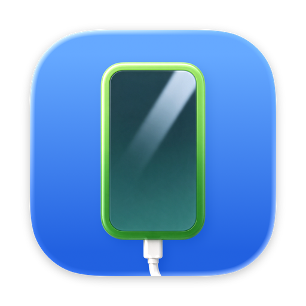

Mount your Android phone on your Mac
MacDroidFS connects Android to macOS and shows the phone as a regular folder in Finder. Browse, copy, edit and delete Android files over USB or Wi-Fi. Free, with no kernel extensions and no macFUSE.
- Free
- macOS 15+
- USB & Wi-Fi
- ADB & MTP

Android files, right in Finder
No separate file manager window: the phone's storage is mounted as a folder, so every Mac app can open and save files on it directly.
Works like a drive
Each device appears in ~/MacDroidFS and in Finder. Drag and drop, Quick Look, open files in any app.
Read and write
Edit documents in place, rename, move and delete. Real random-access writes, not just copy in and out.
USB or Wi-Fi
Uses ADB when USB debugging is on, including wireless debugging. Falls back to MTP when only File transfer is enabled.
Survives unplugging
A pulled cable gives an error instead of a frozen Finder. Plug the phone back in and the same folder keeps working.
Menu bar app
See connected phones, open them in Finder, eject and mount again. Can start at login and live only in the menu bar.
No kexts, no macFUSE
Built on the NFS client that ships with macOS, so there is nothing to approve in Security settings and no restart.
How to connect Android to a Mac
Three steps, and the phone's storage shows up as a folder.
-
Open MacDroidFS
It runs in the menu bar and waits for devices.
-
Connect the phone
Plug in a USB cable and choose File transfer, or turn on USB debugging for faster access.
-
Use Finder
The phone appears as a folder named after its model. Over MTP, an SD card shows up next to internal storage.
Install
MacDroidFS is built from source for now. You need:
brew install libusb pkg-config android-platform-tools
git clone https://github.com/Foxhind/macdroidfs.git
cd macdroidfs
make app
open bin/MacDroidFS.appThe app is not notarized yet: it is signed for the Mac that built it. A command-line version is built with make build; see the README for its options.
Questions
Common questions about using an Android phone with macOS.
Is MacDroidFS free?
Yes. It is completely free, with no paid tier, ads or sign-up. It is published under the Creative Commons BY-NC-SA 4.0 license.
Is it an alternative to Android File Transfer for Mac?
Yes. Instead of a separate file window, MacDroidFS mounts the phone as a folder, so you work with Android files in Finder and in any Mac app: drag and drop, open, edit in place, rename and delete.
Do I need to enable USB debugging?
No, but it helps. With USB debugging on, MacDroidFS uses ADB, which is faster and more reliable. Without it, choosing File transfer (MTP) on the phone is enough.
Which Android phones does it work with?
Any Android device that offers File transfer (MTP) over USB or USB debugging (ADB), such as Samsung Galaxy, Google Pixel, Xiaomi or OnePlus phones and Android tablets.
Can I connect over Wi-Fi?
Yes, through ADB wireless debugging. Once adb sees the phone over Wi-Fi, MacDroidFS mounts it the same way as over USB.